New Hand & Body Landmark Detector
To provide a better understanding of the HandLandmarkDetector,
it is important to note that the Hand module comprises three main parts.
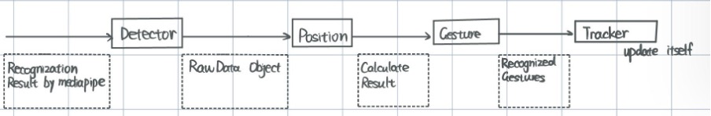
Firstly, the hand landmark detector class is responsible for receiving recognition results from
MediaPipe and converting them to the raw data class. The recognition results have a specific structure,
while the raw data class has a distinct structure of its own.
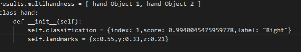
The structure of the raw data class is:
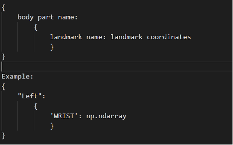
Secondly, once the detector fills the raw data class and passes it to the position class,
the position class then calculates the relative position of the landmarks.
Finally, the Gesture class utilizes the calculated result to determine the matching gesture
from the gesture JSON file, which is subsequently passed to the tracker.
The tracker holds all the gestures that have been activated for a particular hand.
Our team has made significant advancements in the design and implementation of our HandLandmarkDetector algorithm.
In order to improve the accuracy of our system, we have developed an algorithm that utilizes
relative position data to distinguish between different hands detected in the frame.
Upon receiving recognition results from the media pipe, our program calculates
the relative positions of the hands and assigns each hand a unique identity based on its position in the frame.
To achieve this, we have implemented a series of calculations that take into account
the spatial relationships between each landmark detected by the media pipe.
This enables us to accurately identify and track the position of each hand in real time,
even when multiple hands are present in the frame.
As a result of these improvements, our HandLandmarkDetector algorithm is now able to
provide more precise and reliable tracking of hand movements,
which has had a significant impact on the overall performance of our MotionInput system.
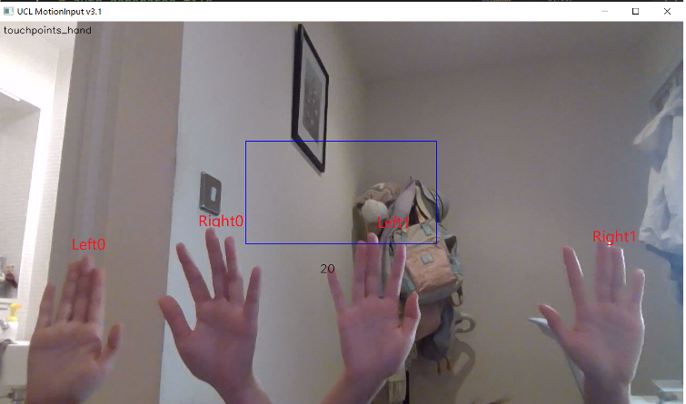
The body module works in the same way as described for the hand module
New Game Modes
-
Adventure Extremity
In implementing this mode, we create extremities triggers (large colored buttons which act as hit targets) in the config.json file. These extremity triggers map to keyboard actions, and their position on screen are specified by the coordinates key. These extremity buttons are configured to be triggered by the wrist of an individual. Note that in this case, we do not have to specify if Player 1 or Player 2 hits an extremity, just whether a left wrist or a right wrist hits an extremity. These extremities are then added to the gestures.json file, and into the _gestures_types property within the GamepadMode2 Class in gamepad_event.py. The event triggers property of the Class is also overwritten with these extremity values in order to actually display them on screen. The final step in implementing this class was to add all of these events to the GamepadMode2 Class.
The model is developed based on the extremity circle mode. It supports playing games that use direction keys.
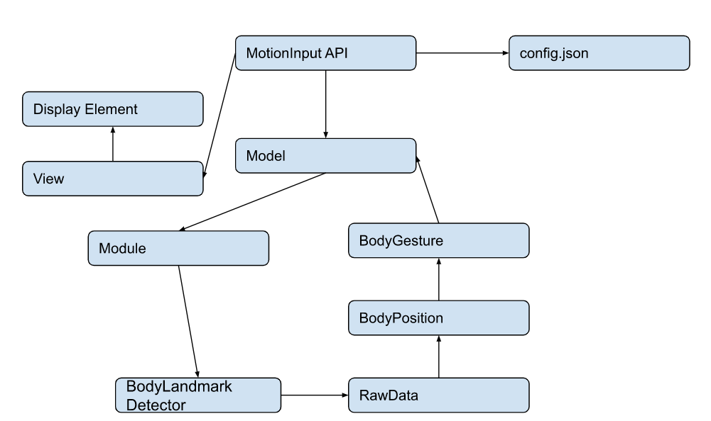
Here is the list of new buttons:
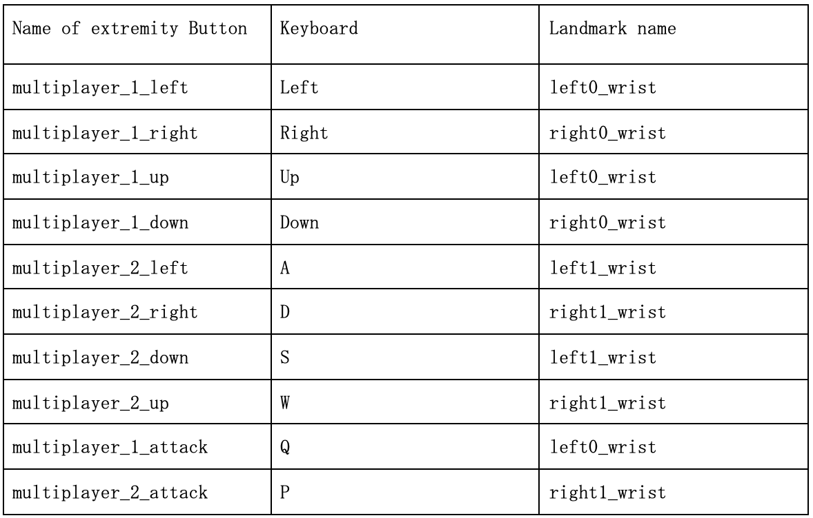 -
Hand Drive Mode
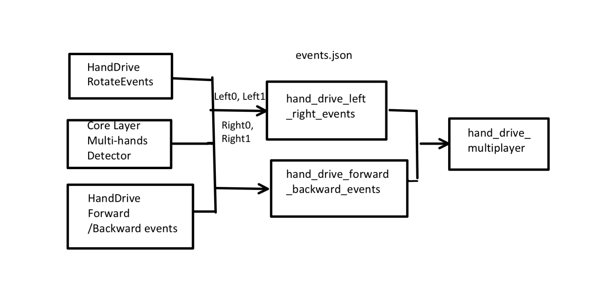
From a high level, this mode maps Player 1’s movements to “w”, “s”, “a” and “d” and Player 2’s movements to the left arrow, right arrow, up arrow and down arrow. Therefore, this mode can be played with driving games that are configured to work with such keys.
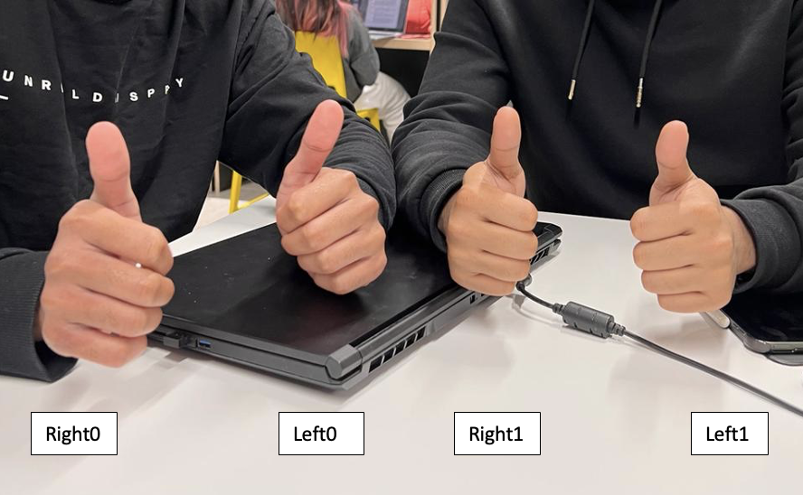
From a more technical perspective, events in the mode are mapped to Left0, RIght0, Left1 and Right 1. Each pair of forward backward events and rotate events for a single player are mapped to a pair of Left-Right hands. Despite the events being duplicated, for example, “hand_drive_left_right_multiplayer_1” and “hand_drive_left_right_multiplayer_2”, these events each have their own implementation of the “HandDriveMultiplayerRotateEvent” Class as the bodypart_names_to_type argument in the events JSON takes values “dom_hand_1” and “off_hand_1”, and these values are referenced precisely in the Class implementations. Hence the same class cannot be reused across events despite duplicate logic. Assuming the logic described above, the forward backward events are also configured in that manner, and all such events are added to the hand_drive_multiplayer mode.
-
Punch Mode
This game mode is designed for mulitplayer fighting games and is based on the work of Imaad Zaffar from Team 38, who implemented a single player punching mode. It supports playing games that use direction keys, by mapping user punching gestures to wasd keys. To create the single player version, Imaad created a new gesture named "punch_simple" which is defined as a hand with the index, middle, ring and pinky landmarks all folded. Then, the corresponding gesture event named "PunchSimpleEvent" identifies the gesture and tracks the z-value of the punch. If the punch passes the depth threshold, specified in the event jsons, then the punch is registered and the corresponding key is pressed. To implement multiplayer functionality, we defined a second gesture event called "PunchSimpleEvent2". In order to ensure backward compatability, we also defined separate punching events for multiplayer use, in "events.json", named "hand_punch_simple_left_hand_1", "hand_punch_simple_right_hand_1", "hand_punch_simple_left_hand_2", and "hand_punch_simple_right_hand_2"
-
Foot Mode
The model is developed based on the extremity circle mode. It supports playing games that use direction keys. Here is the list of new buttons:
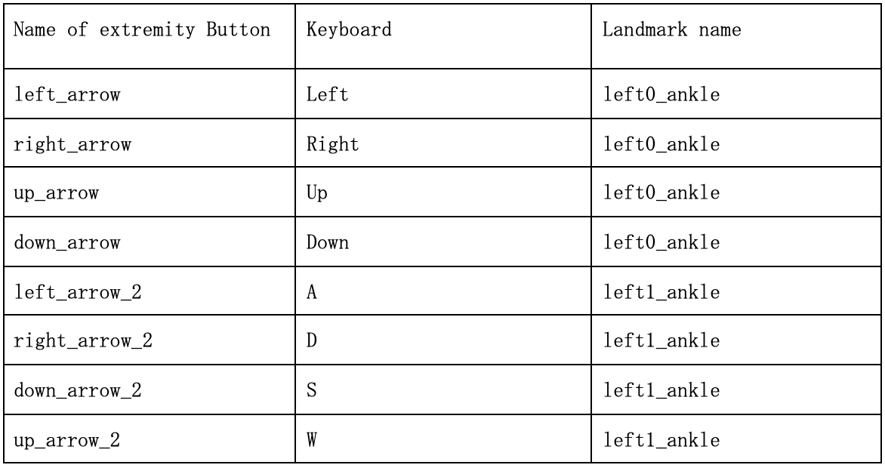 -
Gun Mode
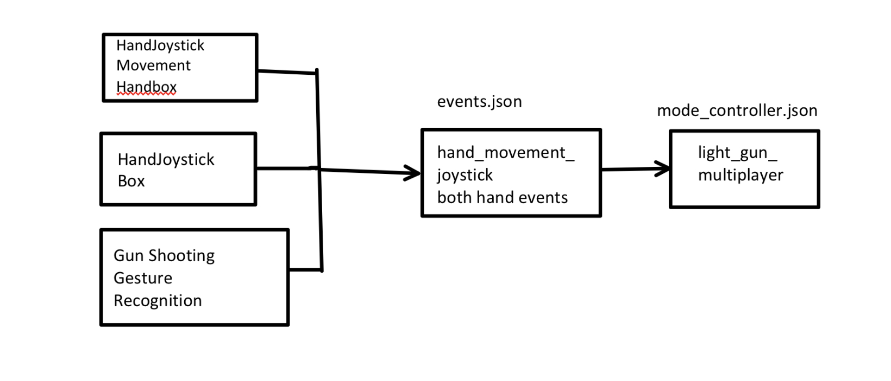
There are three parts to the Light Gun Multiplayer Implementation:
1. The HandJoystickMovementHandBox - The Handjoystick Boxes are the boxes that are on both sides of the screen, mapping a hand's position to key presses on the keyboard (example, Player 1 having their hand on the right side of the screen results in the “d” key being pressed). These boxes also detect the gun shoot action and translate that into a keyboard action as well.
2. The HandJoystickBox — This class is used to determine the position (and size) of the actual boxes seen on screen. The two boxes seen require their own classes and the classes are passed as arguments in the events within the events.json file.
3. The light_gun_multiplayer.json itself. This is the file that is referenced when changing the mode in the mode_controller.json. The events in the mode are the events present in this file, which is currently set for Player 1 to shoot with their right hand and for Player 2 to shoot with their left hand.
Here is an example for an event configured for this mode:
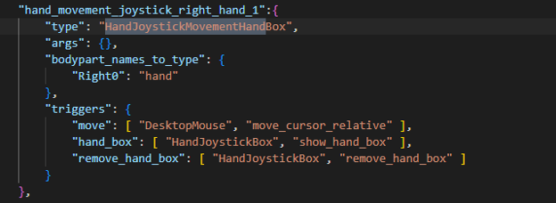
As seen above, both the HandJoystickMovementHandBox and the HandJoystickBox are passed as arguments to the event, and serve their respective purposes. Also observe how "Right0" is passed as an argument here as we are configuring for Multiplayer.
Game Mode Demo Videos
Gun mode demo
Tetris feet demo